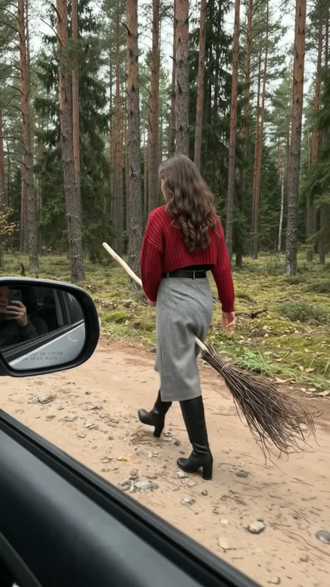
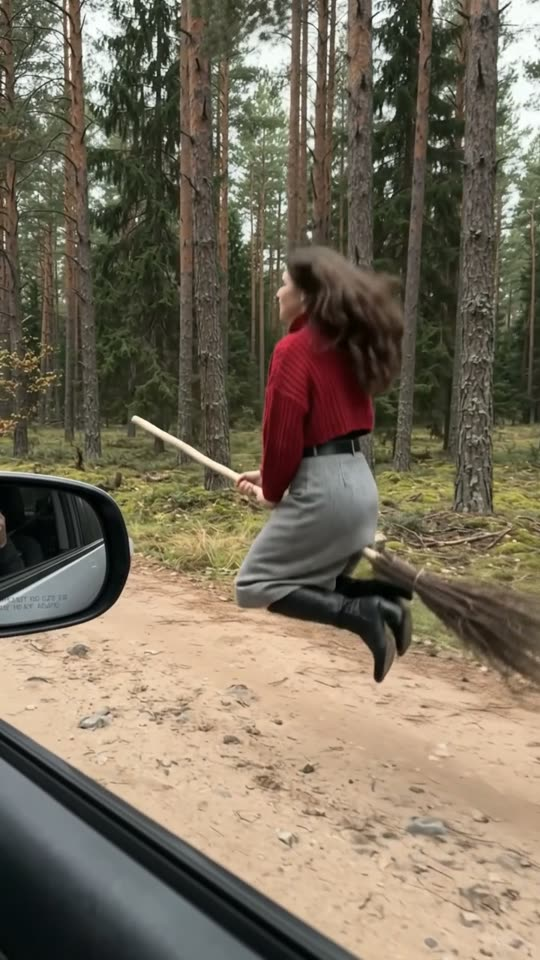
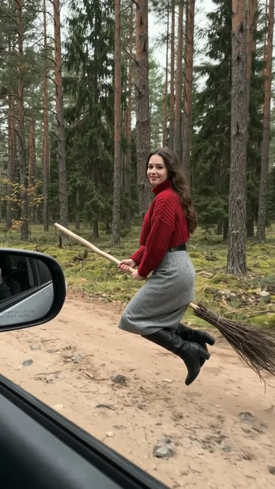
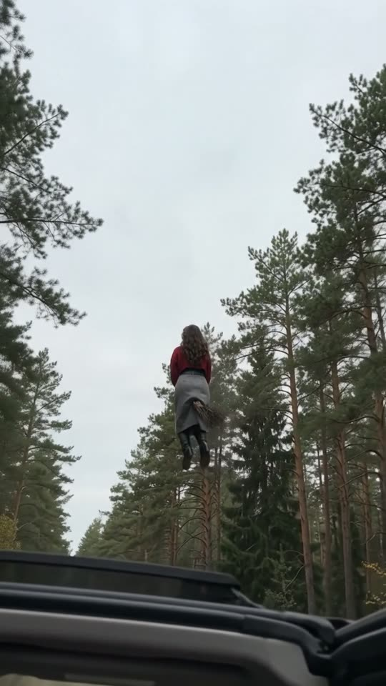

Free prompt pack
One broom.One lift-off.
We are driving slowly through a pine forest. Outside the window, a woman walks beside the car with a broom between her legs. She looks back, jumps, sits on it and keeps up with us, then climbs over the trees. One still image and one prompt, in one take.
Both prompts, in the order I ran them. Sweep the leaves off each one. Tap the forest to speed up.
The first frame
Already walking beside the car. This image is frame one: through the open passenger window, the side mirror on the left, and a woman walking beside the car on a forest dirt road with a broom between her legs.
Watch out
Describe the broom as a real one: a pale wooden handle and a bundle of birch twigs tied with cord. Call it magic and it starts to glow.

The prompt 138 words
Real photo taken through the open passenger window of a car driving slowly along a dirt road through a dark pine forest. The black door sill cuts diagonally across the bottom left of the picture and the car's side mirror sits at the left edge. Outside, three metres away, a young woman with long dark brown wavy hair walks briskly beside the car, seen from the side and slightly behind, a witch's broom held between her legs: a long thin pale wooden handle pointing forward and a thick bundle of brown birch twigs, tied with cord, trailing behind her. She wears a red chunky-knit cropped sweater, a black belt, a grey midi skirt and black knee-high heeled boots. Tall straight pine trunks, green moss on the ground, a reddish-brown dirt road, soft overcast daylight. Real photo, natural colour.
Jump, then fly
Ten seconds, from the passenger seat. Add the image as the reference, set 10 s, 9:16, 720p and audio on, and paste the prompt whole.
- 0–2.0 swalking beside the car
- 2.0–4.0 sa look back
- 4.0–4.6 sthe jump
- 4.6–10 sflying, then over the trees
Watch out
Make her jump first: both boots leave the dirt, then she sits and the broom takes her weight. Without the jump she just appears in the air.
Fragments



The prompt 998 words
FORMAT Real handheld video filmed from the passenger seat of a moving car, through the open window, seen as the finished exported video file: the full picture edge to edge, nothing on top of it. Whatever records the picture is never in frame. One continuous take in real time, no cuts. Vertical frame. The video runs at 24 fps. No frame is repeated. Real time, 1x speed, never slow motion. SCENE From the passenger seat of a car driving slowly along a dirt road through a pine forest, we film a young woman walking briskly beside the car with a witch's broom between her legs, as if she were playing. She glances back at us, jumps, sits on the broom and it lifts her: she flies beside the car at our speed, a metre above the road, looks at us with a small smile, then climbs above the tops of the pine trees into the grey sky until she is a small dark-red shape. We are already driving in the first frame. The take ends with her small in the sky between the treetops. REFERENCE IMAGE Use it for the woman, her clothes, the broom, the car window and mirror, the forest, the road and the light. Everything matches it exactly, zero drift, no smoothing. The movement is described below. THE WOMAN One young woman: long dark brown wavy hair, a red chunky-knit cropped sweater with a mock neck, a black belt, a grey midi skirt, black knee-high heeled boots. The same woman in the same clothes from the first frame to the last. THE BROOM A real besom: a long thin pale wooden handle and a thick bundle of thin brown birch twigs bound with cord near the handle. She holds the handle with both hands in front of her; the twigs trail behind her. One broom; it never changes, never sparkles, never glows. LOCATION MAP We sit on the passenger side with the window open; the car drives forward at walking pace, about 8 km/h, along a straight dirt road. She moves along the edge of the road 3 m from the car door, frame-right of the side mirror, in the same direction as the car. Tall pine trunks line both sides of the road; the ground is covered in green moss. The side mirror stays at the left edge and the door sill across the bottom left. FIRST FRAME The side mirror at x 0-22%, y 47-57%; the black door sill running diagonally from x 0%, y 55% to x 95%, y 100%. The woman at x 40-70%, y 27-75%, seen from the side and slightly behind, mid-stride, the broom between her legs, the handle pointing forward and the twigs trailing to frame-right. Pine trunks and moss above and behind her; the dirt road below her. Instant read: a woman playing witch beside a moving car. No delayed reveal. CAMERA Handheld from the passenger seat, moving with the car: the gentle sway and small bumps of a car on a dirt road. It keeps her in frame. At 7.0–8.5 s it tilts up 45 degrees through the window to follow her up; the window frame and the mirror slide down into the bottom-left corner. It never cuts, never zooms, never leaves the car, never shows the driver, never jumps to a wide shot from outside the car. ACTION TIMING 0–2.0 s — She walks briskly beside the car with the broom between her legs, boots stepping on the dirt, hair swinging, keeping pace with us. 2.0–4.0 s — She looks back at us over her shoulder for a moment, then faces forward and bends her knees. 4.0–4.6 s — She jumps: both boots leave the ground, she sits on the handle and the broom carries her up to 1 m above the road; her knees fold back, her heels point behind her. 4.6–7.0 s — She flies beside the car at our speed, 1 m above the road, the twigs trailing, her hair and skirt fluttering in the wind; she turns her head to us and smiles. 7.0–10 s — She leans forward and the broom climbs steeply, up past the pine trunks and over the treetops; the view tilts up to follow her; she becomes a small dark-red shape against the grey sky between the dark treetops. Hold to the last frame. PHYSICS AND SCALE Her walking is real: weight on each step, hair bouncing. The broom carries her weight: the handle bends slightly under her and her body sways as it flies. She moves at the car's speed until the climb, never faster. She climbs smoothly, never teleports, never floats in slow motion. Real scale: she is about 1.70 m tall, the pines 25 m. One woman, one broom. Nothing morphs. NO FULL-FRAME EVENTS The sky never fills the frame: at the end the dark treetops and the window frame stay in view, and she is always visible. LIGHTING Soft overcast daylight under the pines, cool and even; a grey-white sky above the treetops. AUDIO No music, no score, no narration, no subtitles. The car engine at low speed and gravel crunching under the tyres; her boots on the dirt; a soft whoosh of air as she lifts off; wind through the open window; a short surprised laugh from inside the car at 4.5 s. No words. LOOK Real handheld footage from a car, seen as the finished exported file: natural colour, soft contrast, light compression, no film grain, no lens flare, no slow motion, never CGI, never a fantasy-film look. No camera app interface: no shutter button, no gallery thumbnail, no record button, no icons, no timer, no recording dot, no frame lines. POSITIVE LOCKS One woman, one broom, one car, one forest road. Nobody else in the picture; the driver is never seen. No captions, no subtitles, no on-screen text, no watermark, no logos, nothing on top of the picture. ONE WOMAN. ONE BROOM. NO CUTS. NO SLOW MOTION. NO MUSIC.
Rule 01
Real broom, real woman
Wood and twigs, a sweater and boots, all described as they look. Leave out the hat, the wand and the sparkles and the magic reads as real.
Rule 02
Keep pace with the car
She moves at the car's speed, a metre above the road. Give her a speed and the camera has a reason to stay at the window.
Rule 03
Stay inside the car
When she climbs, the view tilts up through the window. Name the wide shot from outside and close it, or the model cuts to it.
That's the whole build
Now go findyour own broom.
If yours works, send it over. I read every DM and the good ones end up on the account.
@martiiifons